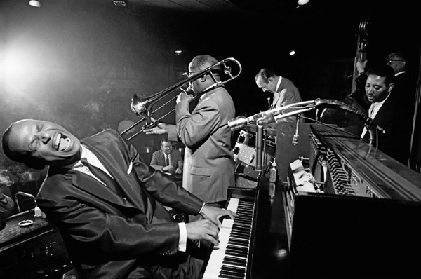

El jazz es un género musical nacido a finales del siglo XIX en los Estados Unidos, que se expandió de forma global a lo largo del siglo XX. Este genero se caracteriza por su:
IMPROVISACÍON: El jazz es conocido por su énfasis en la improvisación, permitiendo a los músicos expresar su creatividad a través de solos y variaciones improvisadas sobre la base de una melodía o progresión de acordes.
ARMONÍAS COMPLEJAS: Emplea armonías sofisticadas, incluyendo acordes extendidos y alterados, así como progresiones armónicas no convencionales, que añaden profundidad y complejidad a la música.
RITMOS ASINCOPADOS: Los acentos rítmicos caen en partes inesperadas del compás, lo que añade un elemento de sorpresa y vitalidad rítmica a la música.
ENSAMBLE Y DIÁLOGO MÚSICAL: Los músicos participan en un diálogo musical, respondiendo e interactuando entre sí en tiempo real.

El jazz tiene sus raíces en la comunidad afroamericana de Estados Unidos a finales del siglo XIX, y es una fusión de tradiciones musicales africanas, europeas y afroamericanas. Durante el período de esclavitud, los africanos llevados a Estados Unidos aportaron sus propias tradiciones musicales, las cuales se mezclaron con la música europea y las influencias culturales locales, dando lugar a formas musicales precursoras del jazz.
A medida que evolucionaba, el jazz se convirtió en una forma de expresión cultural única, con un énfasis en la improvisación y la individualidad artística. Durante la "Era del Jazz" en las décadas de 1920 y 1930, el jazz se popularizó a nivel mundial, siendo interpretado en clubes, salones y teatros en Estados Unidos y Europa.
Duke Ellington, nacido el 1899 y fallecido en 1974, es uno de los músicos más importantes de la historia del jazz. Lidero la famosa banda "Duke Ellington Orchestra" durante varias decadas. Su banda era conocida por su donido distintivo, innovacion y su capacidad para incorporar diversos estilos musicales en su repertorio, lo que le llevo a alcanzar la popularidad y reconocimiento a nivel mundial
Su música mas popular es "Take the 'A' Train"